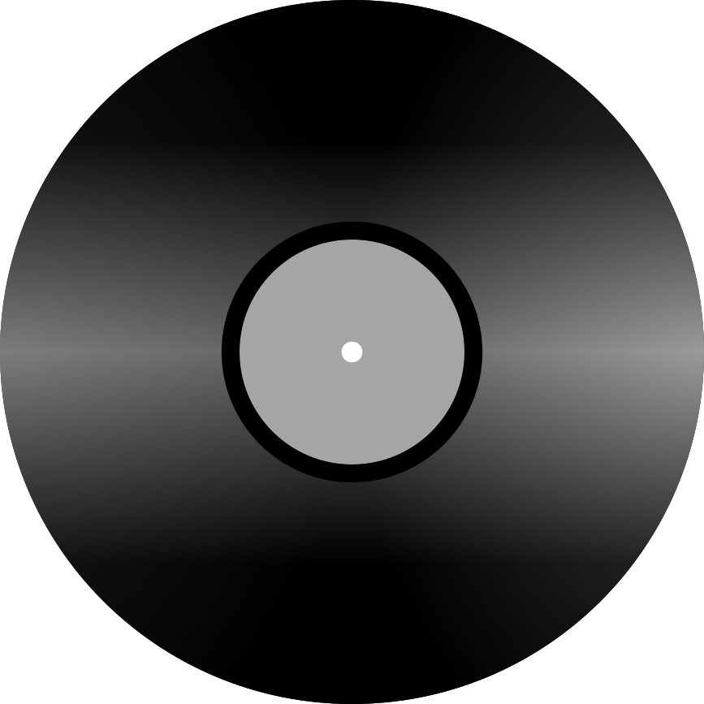

＜Malibu＞ by snoozybeats
https://drive.google.com/drive/u/1/folders/11g5Tc_DwMd29I-wKQUH9sHM7hdlF76r7
Aria
playlist



＜Malibu＞ by snoozybeats
https://drive.google.com/drive/u/1/folders/11g5Tc_DwMd29I-wKQUH9sHM7hdlF76r7
playlist